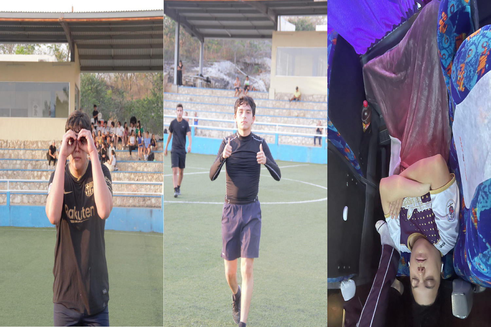

Los videojuegos de carreras son un género de videojuegos que se basan en las competencias de velocidad entre vehículos o personajes. Pueden estar diseñados de forma realista o fantástica y presentar vehículos existentes o inventados. Se los suele clasificar según el tipo de vehículos que compiten (carreras de automóviles, motos, Formula-1, karts, etc...), también se los puede agrupar en subgéneros de acuerdo a la forma de juego que utilizan. Los juegos de carreras son considerados como un genero principal, aunque también suelen estar incluidos como subcategorías de géneros mayores como el de los videojuegos de deportes o alternativamente entre los videojuegos de conducción.
En este apartado, conoceremos la historia de los juevos de carreras fue en la década del 1970. Space Race (1973), el precursor de los juegos de carreras.
Este es el género de carreras mas antiguo en donde el objetivo principal es mantenerse a salvo y evitar las colisiones. La mayoría de estos juegos incluyen un tiempo limitado en el que el jugador debe tratar de alcanzar la meta o punto intermedio, si no lo logra pierde automáticamente. Como variante hay juegos que utilizan combustible en lugar de tiempo y el jugador debe recoger contenedores durante la carrera para evitar que se agote. Ejemplos: Pole Postion, OutRun, Super Hang-On.
Atari publica el videojuego Space Race de Arcade, este es un videojuego diseñado para dos personas que compiten en una carrera espacial en donde controlan unas naves y deben evadir meteoritos y otros competidores.
Sega publica Moto-Cross, un juego de motocross que introduce la perspectiva pseudo-3D con el corredor visto desde atrás y la pista al frente. Sus principales innovaciones son que la pista va cambiando con las curvas y que los sprites se agrandan al acercarse al jugador.
Taito publica Road Champion, un juego de automóviles con vista aérea precursor del género de las carreras deportivas, ya que el objetivo es superar a los competidores y llegar a la meta primero.
Namco publica Rally-X el primer juego de carreras con música de fondo, este además utiliza vista aérea e introduce el desplazamiento de pantallas a ambos lados, horizontal y vertical, también introduce un sencillo radar que permite localizar al automóvil en el mapa.
Nintendo también revoluciona el género con el lanzamiento de Super Mario Kart, el primer juego de carreras de karts que sienta las bases para los juegos de carreras de combate fantásticos.
¿Quienes somos?
Nuestro Equipo de trabajo esta conformado por Emiliano Núñez Sandre, Luis Joaquín Castillo Maury, Gabriel Rivero Gomez
Nuestra Misión: Nuestra misión es crear un videojuego que honre el clásico Pong con una experiencia moderna y emocionante para los jugadores de hoy. Junto con nuestro equipo de desarrolladores web, nos comprometemos a crear una página web informativa que sirva como plataforma para el juego y permita a los usuarios interactuar, aprender y descubrir todo lo relacionado con Pong.
Nuestra Visión: Queremos ser reconocidos como líderes en el desarrollo de videojuegos clásicos modernizados, comenzando con Pong. Nos esforzamos por crear una comunidad de jugadores apasionados y comprometidos alrededor de nuestro juego y nuestra página web. También esperamos expandir nuestra oferta de videojuegos en el futuro, siempre con la meta de ofrecer experiencias únicas y divertidas para los jugadores de todas las edades.